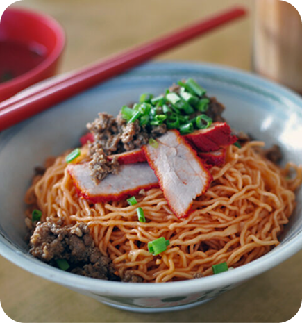
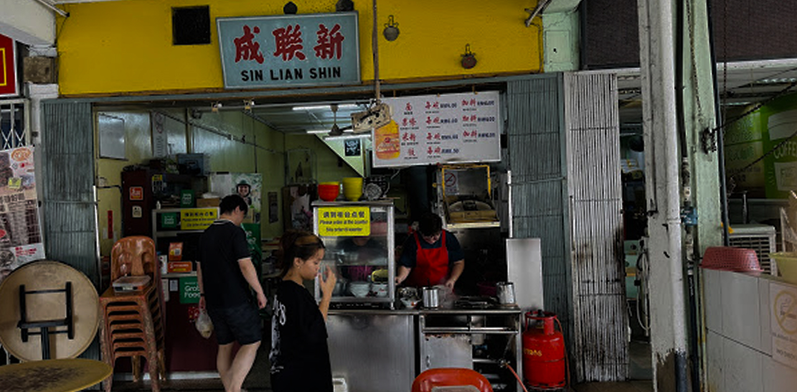
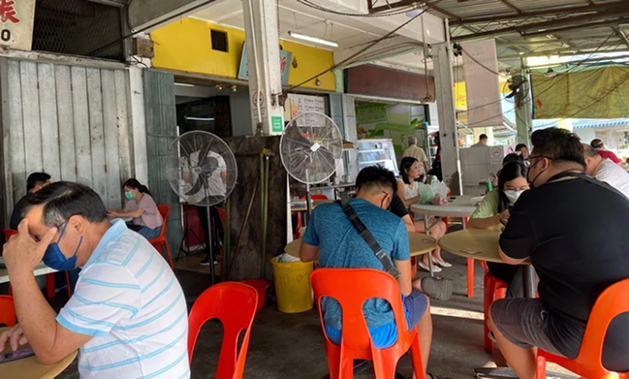
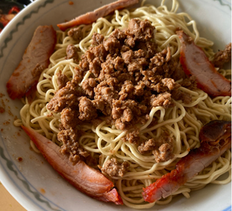
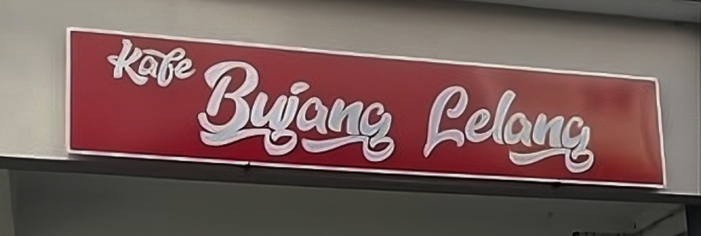
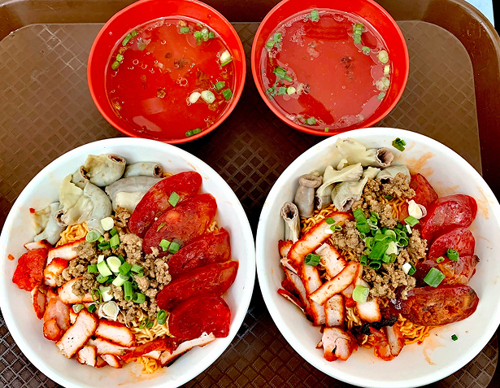

A Hakka favorite, Kolo Mee has features springy egg noodles tossed in shallot oil, light soy sauce, and topped with minced pork, char siu, and fried shallots. Unlike other noodles, it’s served without dark soy sauce, keeping its light, fragrant flavors. A true Sarawak classic!
Kolo Mee traces its roots to Sarawak’s Hakka community, who brought their noodle-making traditions from China. Over time, they adapted the dish using local ingredients, creating its signature light and fragrant flavors.
Unlike other Chinese noodles, Kolo Mee is served without dark soy sauce, highlighting its natural taste. Today, it remains a staple in Sarawak, enjoyed in various styles across the state.



This shop has been here for quite a while. Roughly more than 5 decades and still serving their legendary Kolo Mee until today.
Because it is located near schools, this place is a really popular breakfast spot for students and their parents before school starts.

This shop has been here for quite a while. Roughly more than 5 decades and still serving their legendary Kolo Mee until today.
Because it is located near schools, this place is a really popular breakfast spot for students and their parents before school starts.
Their noodle texture are very unique and keep their return to them for decades. It is nice & definitely making them stand out from the stiff competition.

Took a trip out of Kuching downtown to Sin Lian Shin for the locals’ choice for Kolo mee, and I didn’t leave disappointed.

Good bowl of kolo mee. Due to its good reputation built over the years, it’s cost you a bit more compared to elsewhere in town.


This place serves Mee Kolok a little differently from your usual Chinese go-to Mee Kolok. This stall is owned by Dayak, thus the method of preparation is a little different.
They serve add-on pork sausage and pork intestines as toppings.
The mee taste is average but the meat portion is amazing. Many options ranging from normal to extra special.
Kolo mee a bit sweet,but its okay. Just you have to wait around 20minute for Kolo Mee Special & it worth the wait & journey from Kch to Siburan Maybe the owner would upgrade the bowl to a bigger bowl next time
Superb mee kolok for mee kolok enthusiast. The noodle by itself is already excellent and the toppings are extremely good. They are distinctly different but mix really well together perfectly in harmony.
Discover more delicious Sarawak Chinese dishes and their rich history!